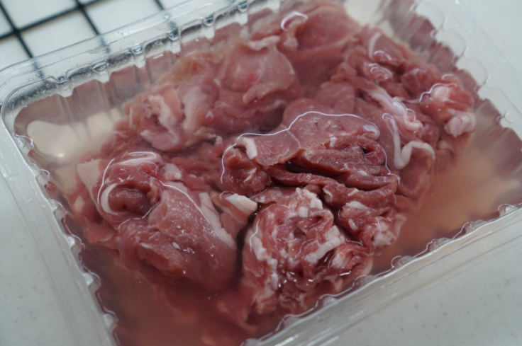
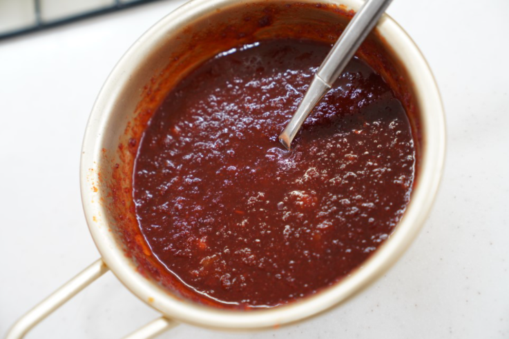
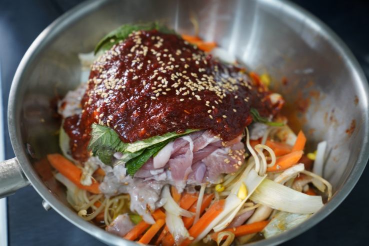

Korea Food
재료 리스트
콩나물 한 대접 | 대패삼겹살 또는 앞다리살 500g | 대파 2대 | 깻잎 20장 | 양파 1/2개 | 당근 1/6개 | 버섯 약간 | 통깨 | 후추
레시피
1. 고기 손질
먼저 고기 핏물을 빼주어야 합니다.

2. 양념장 만들기
간장, 맛술, 설탕, 굵은 고춧가루, 고추장, 다진마늘을 섞어서 콩나물불고기 양념장을 만들어줍니다.
3. 채소 손질
깻잎은 꼭지를 제거하신 후 길게 해서 잘라 주세요. 양파와 대파, 당근도 썰어 준비해주세요.
그 다음 콩나물을 씻어 체에 받쳐 물기를 제거해주세요.

4.조리
콩나물을 올린 후에 대파, 양파, 버섯, 대패 삼겹살 또는 돼지 앞다리살, 깻잎 순으로 올려주세요.
미리 만들어 놓은 콩나물 불고기 양념장을 부어준 뒤 통깨를 뿌린 후 약불에 끓이다가 수분이 나오면 중불로 올려주세요.
콩나물 불고기 국물이 자작하게 끓어 오르면 불을 약불을 다시 줄이고 이때 양념이 잘 섞이도록 섞어 주시면 됩니다.

콩나물 불고기 완성!!